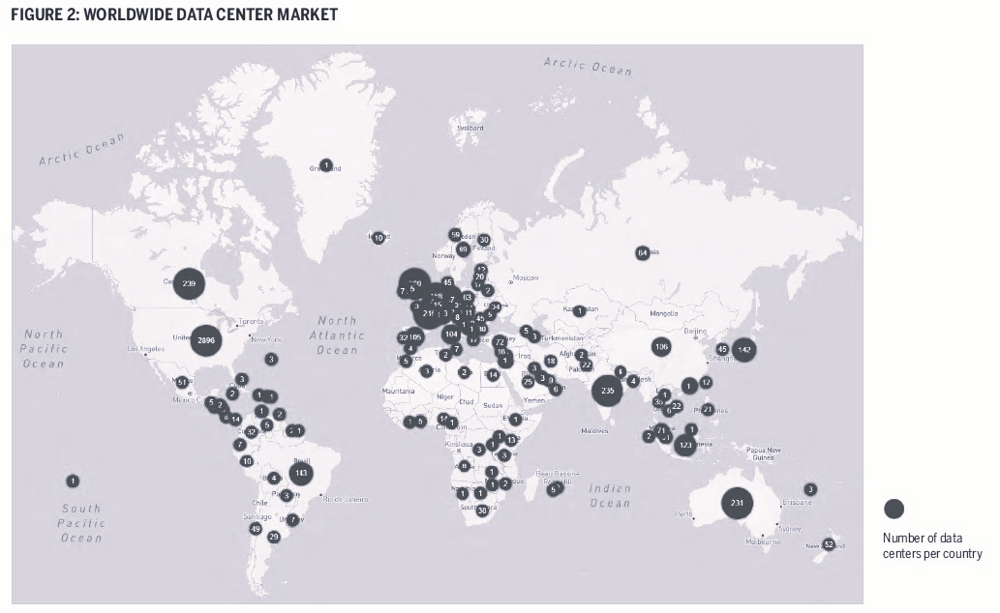
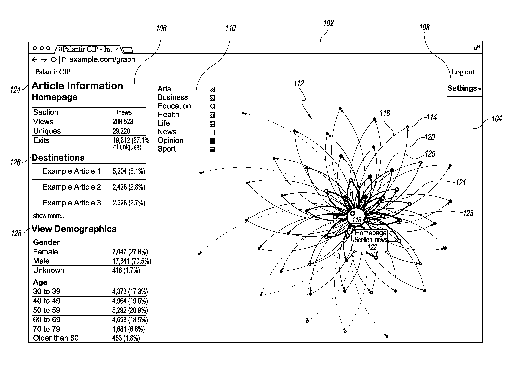

The hum of generators, the heat of information flow, and the mechanical whir of fans. In a sanitized environment such noise could be mistaken for life, but the life it mimics is nowhere to be seen. In a data centre, systems capable of managing indescribable volumetric streams of information leave an overwhelming auditory mark. Each bit flowing- manipulated, processed, reprocessed, repackaged, cooled - energy seeping out of the system, system exhaust. Transient noise, mechanical and electrical, generated at a steady rate becomes drone, reverberating around the room in waves - light and sound. Global information circulation. Life by the information superhighway.
Organs of a Digitized Society
The smooth operation of data centres are crucial for contemporary life. They are the motors keeping digital spaces intact. The recent Amazon Web Services (AWS) outage on the 20th Oct 2025 caused major disruptions to HMRC, Zoom, and banking services such as Lloyds, Bank of Scotland, and Halifax [1]
“In the UK,… access to all sorts of public services — from tax self-assessment to claiming benefits — was severely impacted: ‘Sorry, there is a problem with the service. Try again later’”"[3]. Nine days later, a similar Microsoft Azure outage impacted Microsoft 365, Outlook, Teams, OpenAI, Heathrow Airport, Youtube, Facebook etc. globally[4]
Every connection, every execution increasingly requires the removed computation powers of a data center. Without, financial transactions, state administration, and food logistics would collapse. The cybersecurity industry operates upon “predictions that urban centres would descend into chaos within three days without a functioning digital network. The supply of electricity, water, and food would halt” [5]. They have become organs of a digitized society.
Growing a Data Body
We are growing a global body of data. This map gives a roughly up to date number of global data centres, concentrated in North America, Europe, and East Asia. In the UK there are approx. 500 now, and continuously expanding. Intimately interconnected into a communicative nervous system

As societal functions became digitized, a new business venture emerged - data analytics - tracking user interactions within digital environments. Likes, shares, watch time, comments, time of day, location, heart rate, steps, groceries - all to map out patterns of interactions - to create a profile optimized to predict future user behaviour. To do so, data sets on users were expanded, and so too were opportunities for user contributions. Fit- bits, card points, subscription services, user cookies. Non-human-human interfaces onto which users would express their desires - desires to purchase, to read, to watch… data (un) knowingly scraped from every click, scroll, scan, and pause
Behavioural models are bought and sold, competing amongst other tech companies to best predict user outcomes, used to ‘optimize human interactions with digital spaces’ (targeted ads, dynamic pricing etc.) The proliferation of data centres has permitted the proliferation of digital surveillance. The Cambridge Analytica scandal in 2018, a self-styled “global election management agency” highlighted the potential of behavioural models for anti- democratic political manipulation, using data scraped from 87 million Facebook users [7].
As recently as the 4th Sep 2025, Google paid $425 million ‘for breaching users privacy by collecting data from millions of users even after they had turned off a tracking feature in their Google accounts "[8] In January 2026, Google paid out $68 million for sending advertisers private conversations after Google Assistant was mistakenly triggered.[9] Acxiom, an American big data company, promises clients a "360-degree customer view" — holding data on more Americans than the FBI.[10]

Although data protection legislation was introduced to protect netizens — for example, the UK General Data Protection Regulation in 2018 — the rise of machine learning and large language models means data resources and the functions they serve remain in contention.
Interactions with the Human Body
We bleed information. Nutrition, oxygenation, cortisol, cholesterol, blood pressure, heart function, sweat… variable information over varying timescales - seconds, lifetimes, to generations. Medical information is extremely personal. The personal is political. The National Health Service (NHS) holds decades worth of data on British patients (past conditions, pre-dispositions, GP registrations, hospital activity, patient safety, family history etc.). In May 2024, the Tony Blair Institute (TBI) produced a report calling to “fix Britain’s “data-access problem”: create a “single front door” providing “seamless access” to NHS data; and host all of this data outside the NHS, while retaining government control of the programme” [[12] Missing are proposals to modernise the NHS within government capabilities — which might require properly funding the NHS — so as to retain patient data privacy.
Over the course of £257 million in donations, Larry Ellison (CEO of Oracle, a Texas-based software engineering firm) has taken the Tony Blair Institute and turned it into a think tank focused on disseminating tech policy proposals favouring private interventions into the NHS. The TBI had a turnover of £145.3m in 2023, while comparable think tanks such as the Institute of Public Policy Research had incomes of £4.3m in 2023–24.[12] Blair and Ellison's special relationship grew from 2003, when Oracle provided supplies to specialist schools, into £1.1bn worth of government contracts since.
Unsurprisingly, the drive to turn the NHS into an insurance-based system has been taken up by the current Starmer government — hiring a former Blair advisor, Peter Kyle, as Technology Secretary, and enlisting Palantir under a £300 million contract to undertake the project.[12] Under the insurance-based scheme, patient data would no longer serve patient interest, but instead facilitate insurance companies to charge extra, or refuse financial coverage entirely, on the basis of pre-existing conditions or any other arbitrary factor. Ironically, it is the "outdated" data system currently preventing private sector penetration into British medical data. It is in this context that current NHS "modernisation" drives must be understood.
Digital Panopticon
Everything around me looks modern — or contemporary, I should say. Polished: glass and steel. I'm standing in a queue in the new terminal with my passport in hand. Last time I flew I was in a queue round the corner, but I've been guided to this new section. As I reach the red line, I open the passport to my photo as the sign asks. I walk up to the next vacant lane, put my passport on the scanner, and press down. The bar begins to fill. I'm scanned through. The first glass barrier silently makes way to the second. This one has a camera. It automatically readjusts to my height. The red dot glows. The off-centre LED screen displays a live image of me. My expression looks blank but fatigued — or does it? The camera focuses for a second or two, thinking… Is there even someone behind it? Does there have to be? Does it see what I see? Where will these photos go? What can it sense? — the barrier opens, disrupting my thoughts. I walk through. Everything is so convenient.
In an interview with Blair last month, Home Secretary Shabana Mahmood outlined her belief in the potential of such data networks to transform law and order. She goes on to express her desire to see the expansion of AI use in the police force to facilitate “Minority Report-style” policing .[15] It doesn't matter to Mahmood that current facial recognition technologies disproportionately misidentify people of colour, increasing wrongful arrests and police brutality against already marginalised communities[16] or even that the 2002 dystopian sci-fi film revolves around the manipulation and misuse of predictive policing.
As of January 2026, the UK government has begun rolling out facial recognition software developed by Israeli company Corsight AI and software contractor Palantir Technologies.[18] This has already led to the wrongful arrest of an Asian man 100 miles from the site of a burglary, in a city he had never visited.[19] Mahmood even went on record saying she wanted "to achieve, by means of AI and technology, what Jeremy Bentham tried to do with panopticon — that is, that the eyes of the state can be on you at all times."[18]
Unrestricted by the confines of traditional disciplinary systems (prisons, detention facilities, watchtowers etc.), the digital realm overcomes optical barriers and produced a diffuse method of surveillance (think the ankle monitor). Prisoners are now permitted to stay at home, a permissive freedom with a darker undertone - all homes become potential prison cells. GPS, timestamps, patterns of movements etc. are all carried out through invisible transmissions in the radio regime. Surveillance is no longer overt, and regularly exercised by corporate actors.
The Fetishisation of Data
We are knowable maps. Embedded statistics. Predictable. Nothing less and nothing more. Desires come and go, on command. We are at a transition — away from the intractable, towards clear certainty. Everything, everyone condemned to transparency through an interconnected nervous system. All that is left is to be steered to a final destination, in the knowledge of reaching the warm embrace of finality. Gone is mendacity; now all that remains must be true. At least so claims the new faith of Data-ism.
In The New York Times in 2013, David Brooks wrote:[20]
"If you asked me to describe the rising philosophy of the day, I'd say it is data-ism. We now have the ability to gather huge amounts of data. This ability seems to carry with it certain cultural assumptions — that everything that can be measured should be measured; that data is a transparent and reliable lens that allows us to filter out emotionalism and ideology; that data will help us do remarkable things — like foretell the future."
— David Brooks, The New York Times, 2013
The surveillance component of data systems is voyeuristic. It proclaims to reveal an inner truth about a surveilled subject and their behaviours. It fetishizes not the subject itself — since the subject may remain effectively anonymous — but the data. Data-ism is the fetishization of data permeating those subject to its surveillance, at its most acute in personalized social media algorithms.

We may get embarrassed at the content shown by personalized algorithms, as if they reveal a deeper truth about ourselves — as if they were a mirror to our desires. We are all curators, after all. Every input, passive or active, feeds what we see, what we know, and in a sense who we are becoming. We may even take corrective action, changing how personalized algorithms view us by altering the data they receive. This embarrassment is the subconscious recognition of being surveilled. Consciously or subconsciously changing behavioural patterns then becomes a form of censorship — in other words, control.
In taking ownership of personalized algorithms, we submit to the logic of Data-ism. We admit the algorithm is a real or valid representation of who we are, and imbue it with significance and power over us. In doing so, we ignore the programmed tendencies within algorithms to spread engaging content — controversial, brainrot, sexual — to monopolize attention. The algorithm then is purely a mechanism for tech company revenues, with a digitized human face. One that may look like yours. Standing face to face with your "digital twin."
Chapels of a Digitized Faith
The congregation is indifferent to the service. There is no visible leader. No light through stained glass. No halls for music to fill. No ceremonies and no collective experience. The smell of candlewax has faded. Minarets and church bells have become obsolete, only cellular vibration remains. Angels confined to fibre optic cables. A choir of cooling systems. Faith lies in digital information circulation itself. Experience is individualised - a missing unified message. Its techno-evangelists claim its inevitability and its users become subjects of its networks. Networks produced by data centres - chapels to a digitized faith.
As Byung-Chul Han writes, "Big data is supposed to be freeing knowledge from subjective arbitrariness… mistrust even extends to (political) theory, which is suspected of being an ideology: if enough data are available, it should prove superfluous as well. The second Enlightenment is the age of purely data-driven knowledge."[10]
But the insights data can produce are restricted by the logic they represent. Only correlations may be drawn from datasets. How A may influence B — no matter how strong — does nothing to elucidate why that is the case; only that the data says so. The final conclusion is still a matter of interpretation, requiring important contextualisation — often multi-faceted, contradictory, potentially irrational.
Data cannot reveal how two factors may in fact condition one another, or be the product of an overarching concept. The concept surrounds A and B, conditioning both, and still requires an understanding of its applications and contexts — it still requires interpretation. Only then can comprehension occur. There is no intelligence in artificial intelligence. Computing power cannot substitute criticality or creativity; it may only automate pastiche — a very postmodern condition.
Late-stage capitalism alienates humans by subjecting their intelligent capacities to drudgery, as extensions to the cash machine and the computer. In automating such mundane tasks through yet another extension of computation, and automating the economically productive tasks once undertaken by humans, we are in no way automating our whole intelligent capacities. To reduce the human to economic productivity allows the fetishization of "artificial intelligence" and a debasement of the human - a very capitalist condition.

The belief in the capacity of Big Data to achieve transparency — to fully know its subjects, to rid society of emotionalism and ideology — is false. As Adorno pointed out, "false clarity is another name for myth."[24] The belief in Data-ism is a new religion, one that claims to counter ideology but is in fact just another form of ideology. We are building chapels to a digitized faith.
In Conclusion: Capitalist Cyberspace
This article isn’t just about data centres. To focus on the technologies themselves used in coercive profitable practices is, however, only one element. Data centres (especially AI-optimised) cause undeniable harm to local water and electrical resources, but the 5G tower or data centre need not necessarily be used for such hostile purposes. It is the broader socio-economic incentive structure that locks their current functions into place. Just as a CEO is required to increase shareholder value or be replaced, data centre propagation is integral to forecasted tech growth. Its hostile use is a consequence of the capitalist growth imperative. In Marxian terms, digital totalitarianism is the product of commoditizing social relations and human behaviour, accelerated by competition. It is a product of a specific political and economic system, of which cyberspace simply reproduces. Therefore, we operate not in a ‘neutral’ cyberspace but a capitalist cyberspace.
What could cyberspace look like? The emergence of the internet had once posed this exact question but its vision of a techno-utopian future synthesized with the economic system under which it emerged. What resulted was a spatially de-localized but authoritarian surveillance system dominated by tech companies - one that reflected the transnational wealth extraction of already existing neoliberalism. A turn to democratization is necessary to combat digital overreach and reestablish the digital commons. Diagnosing the extent and distribution of power across our digitized societal organs is crucial, but it is only the first step on the path to transforming capitalist cyberspace. While the digital and material may appear disconnected opposites at first, the transformation of one is already reshaping the other - the question remains, in whose interest?